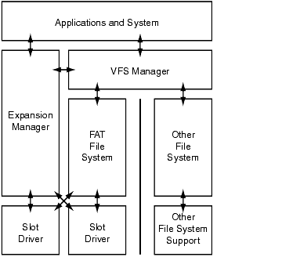
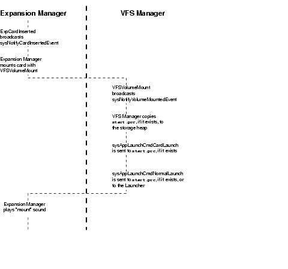
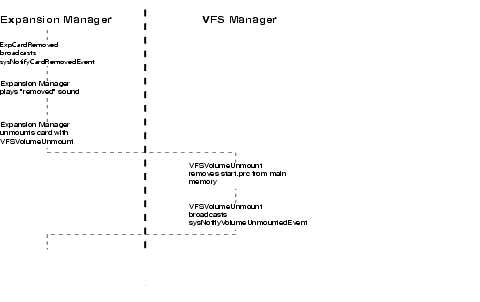

|
This chapter describes how to work with expansion cards and add-on devices using the Palm OS® Expansion and Virtual File System (VFS) Managers.
• Expansion Support introduces basic terminology and discusses the hardware and file systems supported by the Expansion and VFS Managers.
• Architectural Overview illustrates the Palm OS expansion architecture and discusses the differences between primary and secondary storage.
• Standard Directories lists directories that are treated specially by the Palm OS and describes their use.
• Applications on Cards covers the various implications of running Palm OS applications from an expansion card.
• Card Insertion and Removal covers, in detail, the sequence of events that occur when an expansion card is inserted into or removed from an expansion slot.
• Checking for Expansion Cards shows you how to verify that the handheld supports expansion, how to check each of the handheld's slots for expansion cards, and how to determine the capabilities of a card in a given slot.
• Volume Operations discusses the various ways in which you can work with volumes on an expansion card.
• File Operations discusses the various ways in which you can work with files on an expansion card.
• Directory Operations discusses the various ways in which you can work with directories on an expansion card.
• Custom Calls briefly discusses how you can go beyond the functions provided by the Expansion and VFS Managers and interact with specialized I/O devices.
• Debugging briefly introduces the process of debugging an application that relies on the presence of an expansion card.
Expansion Support

Beginning with Palm OS 4.0, a set of optional system extensions provide a standard mechanism by which Palm OS applications can take advantage of the expansion capabilities of various Palm Powered™ handhelds. This capability not only augments the memory and I/O of the handheld, but facilitates data interchange with other Palm Powered handhelds and with devices that aren't running the Palm OS. These other devices include digital cameras, digital audio players, desktop or laptop computers, and the like.
Primary vs. Secondary Storage
All Palm Powered handhelds contain primary storage-directly addressable memory that is used for both long-term and temporary storage. This includes storage RAM, used to hold nonvolatile user data and applications; and dynamic RAM, which is used as working space for temporary allocations.
On most handhelds, primary storage is contained entirely within the device itself. The Palm OS memory architecture doesn't limit devices to this, however; devices can be designed to accept additional storage RAM. The products developed by Handspring™ work this way; memory modules plugged into the Springboard slot are fully-addressable and appear to a Palm OS application as additional storage RAM.
Secondary storage, by contrast, is designed primarily to be add-on nonvolatile storage. Although not limited to any particular implementation, most secondary storage media:
• can be inserted and removed from the expansion slot at will
• are based upon a third-party standard, such as Secure Digital (SD) memory cards, MultiMedia (MMC) cards, CompactFlash, Sony's Memory Stick™, and others
• present a serial interface, accessing data one bit, byte, or block at a time
Applications access primary storage either directly, in the case of most dynamic RAM, or through the Database and Resource Managers. To access secondary storage, however, applications use the Expansion and VFS Managers. These have been designed to support as broad a range of serial expansion architectures as possible.
Expansion Slot
The expansion slots found on many Palm Powered handhelds vary depending on the manufacturer. While some may accept SD and MMC cards, others may accept Memory Stick or CompactFlash. Note that there is no restriction on the number of expansion slots that a given handheld can have.
Depending on the expansion technology used, there can be a wide variety of expansion cards usable with a given handheld:
• Storage cards provide secondary storage and can either be used to hold additional applications and data, or can be used for a specific purpose, for instance as a backup mechanism.
• ROM cards hold dedicated applications and data.
• I/O cards extend the handheld's I/O capabilities. A modem, for instance, could provide wired access, while a Bluetooth™ transceiver could add wireless capability.
• "Combo" cards provide both additional storage or ROM along with some I/O capability.
Universal Connector
Certain newer Palm Powered handhelds may be equipped with a universal connector that connects the handheld to a HotSync® cradle. This connector can be used to connect the handheld to snap-on I/O devices as well. A special slot driver dedicated to this connector allows handheld-to-accessory communication using the serial portion of the connector. This "plug and play" slot driver presents the peripheral as a card in a slot, even to the extent of providing the card insertion notification when the peripheral is attached.
Because the universal connector's slot driver makes a snap-on peripheral appear to be a card in a slot, such peripherals can be treated as expansion cards, at least from an application developer's perspective. For the remainder of this chapter, wherever an I/O card could be used, the phrase "expansion card" can be taken to mean both "expansion card" and "plug and play peripheral."
Architectural Overview
Figure 7.1 illustrates the Palm OS expansion architecture. It is designed to be flexible enough to support multiple file systems and diverse physical expansion mechanisms while still presenting a consistent set of APIs to applications and to other parts of the Palm OS. The following sections describe the major components of the Palm OS expansion architecture. Working from the bottom up, those components are: slot drivers, file systems, the VFS Manager, and the Expansion Manager.
Figure 7.1 Palm OS expansion architecture

Slot Drivers
A slot driver is a standard Palm OS shared library of type sysFileTSlotDriver ('libs'). It is a special library that encapsulates direct access to the hardware and provides a standard set of services to the Expansion Manager and, optionally, to file system libraries. Adding support for a new type of hardware expansion is usually simply a matter of writing a slot driver for it. As illustrated in Figure 7.1, applications don't normally interact directly with slot drivers.
Each expansion slot has a slot driver associated with it. Slots are identified by a unique slot reference number, which is assigned by the Expansion Manager. Expansion cards themselves are not numbered individually; applications typically reference the slot into which a card is inserted. Note, however, that a slot may or may not have a card in it at any given time, and that a card can be inserted and removed while an application is running.
NOTE: "Card number" is a Palm OS Memory Manager term, and is not to be confused with "slot reference number."
The current implementation only supports one volume per slot.
File Systems
The Palm OS expansion architecture defines a common interface for all file system implementations on the Palm OS. This interface consists of a complete set of APIs for interacting with the file system, including the ability to open, close, read, write, and delete both files and directories on named volumes.
File system implementations are packaged as shared libraries of type sysFileTFileSystem ('libf'). They are modular plug-ins that add support for a particular type of file system, such as VFAT, HFS, or NFS. The Palm OS expansion architecture allows multiple file system libraries to be installed at any given time. Typically, an implementation of the VFAT file system is present.
VFAT is the industry standard for flash memory cards of all types. It enables easy transfer of data and or applications to desktops and other devices. The VFAT file system library included with Palm OS 4.0 natively supports VFAT file systems on secondary storage media. It is able to recognize and mount FAT and VFAT file systems, and offers to reformat unrecognizable or corrupted media.
Because the VFAT file system requires long filenames to be stored in Unicode/UCS2 format, the standard VFAT file system library supports conversion between UCS2 and Shift-JIS (the standard Palm OS multi-byte character encoding), and the Palm/Latin encoding.
VFS Manager
The VFS (Virtual File System) Manager provides a unified API that gives applications access to many different file systems on many different media types. It abstracts the underlying file systems so that applications can be written without regard to the actual file system in use. The VFS Manager includes APIs for manipulating files, directories, and volumes.
NOTE: Although the great majority of the functions in the VFS Manager can be used by any application, some are intended only for use by slot drivers and file systems. Others are not intended for use by third-party applications but are designed primarily for system use.
The VFS Manager, the Data Manager, and File Streaming APIs
With the addition of the VFS Manager to the Palm OS, there are now three distinct ways applications can store and retrieve Palm OS user data:
• The Data Manager manages user data in the storage heap. It was specifically designed to make the most of the limited dynamic RAM and the nonvolatile RAM used instead of disk storage on most handhelds. Use the Data Manager to store and retrieve Palm OS user data when storage on the handheld is all that is needed, or when efficient access to data is paramount.
• The File Streaming API is a layer on top of the Data Manager that provides file functionality with all data being read from or written to a database in the storage heap. Most applications have no need for the File Streaming APIs; they are primarily used by applications that need to work with large blocks of data.
• The VFS and Expansion Managers were designed specifically to support many types of expansion memory as secondary storage. The VFS Manager APIs present a consistent interface to many different types of file systems on many types of external media. Applications that use the VFS APIs can support the widest variety of file systems. Use the VFS Manager when your application needs to read and write data stored on external media.
Palm OS applications should use the appropriate APIs for each given situation. The Data Manager, being an efficient manager of storage in the storage heap, should be used whenever access to external media is not absolutely needed. Use the VFS API when interoperability and file system access is needed. Note, however, that the VFS Manager adds the extra overhead of buffering all reads and writes in memory when accessing data, so only applications that specifically need this functionality should use the VFS Manager.
For more information on the Data and Resource Managers, as well as on the File Streaming APIs, see Chapter 6, "Files and Databases." For details of the APIs presented by the VFS Manager, see Chapter 53, "Virtual File System Manager," in the Palm OS Programmer's API Reference.
Expansion Manager
The Expansion Manager is a software layer that manages slot drivers on Palm OS handhelds. Supported expansion card types include, but are not limited to, Memory Stick and SD cards. The Expansion Manager does not support these expansion cards directly; rather, it provides an architecture and higher level set of APIs that, with the help of low level slot drivers and file system libraries, support these types of media.
The Expansion Manager:
• broadcasts notification of card insertion and removal
• plays sounds to signify card insertion and removal
• mounts and unmounts card-resident volumes
NOTE: Some of the other functions provided by the Expansion Manager are for use by slot drivers and file systems and are not generally used by their-party applications.
For details of the APIs presented by the VFS Manager, see Chapter 29, "Expansion Manager," in the Palm OS Programmer's API Reference.
Standard Directories
The user experience presented by the Palm OS is simpler and more intuitive than that of a typical desktop computer. Part of this simplicity arises from the fact that the Palm OS doesn't present a file system to the user. Users don't have to understand the complexities of a typical file system; applications are readily available with one or two taps of a button or icon, and data associated with those applications is accessible only through each application. Maintaining this simplicity of user operation while supporting a file system on an expansion card is made possible through a standard set of directories on the expansion card.
The following table lists the standard directory layout for all "standards compliant" Palm OS secondary storage. All Palm OS relevant data should be in the /PALM directory (or in a subdirectory of the /PALM directory), effectively partitioning off a private name space.
| Directory |
Description |
| / |
Root of the secondary storage. |
| /PALM |
Most data written by Palm™ applications lives in a subdirectory of this directory. start.prc lives directly in /PALM. This optional file is automatically run when the secondary storage volume is mounted. Other applications may also reside in this directory. |
| /PALM/Backup |
Reserved by the Palm OS for backup purposes. |
| /PALM/Programs |
Catch-all for other applications and data. |
| /PALM/Launcher |
Home of Launcher-visible applications. |
The Palm OS Launcher has been enhanced to be expansion card aware. When an expansion card containing a file system is inserted, all applications listed in the card's /PALM/Launcher directory are automatically added to a new Launcher category. This new category takes the name of the expansion card volume. Note that the name displayed in the Launcher for a given application is the name in the application's tAIN (application icon name) resource or, if this resource is empty, the database name, which may or may not match the name of the file.
NOTE: Whenever possible give the same name to the .prc file and to the database. If the .prc filename differs from the database name, and users copy your application from the card to the handheld and then to another card, the filename may change. This is because the database name is used when an application is copied from the handheld to the card.
When a writable volume is mounted, the Launcher automatically creates the /PALM and /PALM/Launcher directories if they don't already exist. If they do, and if there are applications present in the /PALM/Launcher directory, the Launcher automatically switches to the card's list of applications unless it runs start.prc.
In addition to these standard directories, the VFS Manager supports the concept of a default directory; a directory in which data of a particular type is typically stored. See "Determining the Default Directory for a Particular File Type" for more information.
Applications on Cards
Palm OS applications located in the /PALM/Launcher directory of an expansion card volume appear in a separate Launcher category when the card is inserted into the handheld's expansion slot. If you tap the icon for one of these applications, it is copied to main memory and then launched.
Applications launched from a card ("card-launched" applications) are first sent a sysAppLaunchCmdCardLaunch launch code, along with a parameter block that includes the reference number of the volume on which the application resides and the complete path to the application. When processing this launch code, the application shouldn't interact with the user or access globals. Unless the application sets the sysAppLaunchStartFlagNoUISwitch bit in the start flags (which are part of the parameter block), the application is then sent a sysAppLaunchCmdNormalLaunch launch code. This is when the application should, if it needs to, interact with user. Applications may want to save some state when sysAppLaunchCmdCardLaunch is received, then act upon that state information when sysAppLaunchCmdNormalLaunch is received.
When the user switches to a new application, the card-launched application is removed from main memory. Note, however, that any databases created by the card-launched application remain.
There are certain implications to this "copy and run" process.
• There must be sufficient memory for the application. If the handheld doesn't have enough memory to receive the application, it isn't copied from the expansion card and it isn't launched.
• The copying process takes time. For large applications, this can cause a noticeable delay before the application is actually launched.
• If some version of the application on the card is already present in main memory, the Launcher puts up a dialog that requires the user to choose whether or not to overwrite the in-memory version.
• Card-launched applications have a limited lifetime: applications reside in main memory only while they are running. When the user switches to a different application, the card-launched application that was just running is removed from main memory. If the card-launched application is then re-launched, it is once again copied into the handheld's memory.
• "Legacy" applications-those that are unaware that they are being launched from a card-only work with databases in main memory. Associated databases aren't copied to main memory along with the application unless the database is bundled with the application. Databases created by card-launched applications are not removed along with the application, however, so this data is available to the application when it is subsequently run. Applications that are written to take advantage of the VFS Manager can read and write data on the expansion card, so this limitation generally only applies to legacy applications.
Bundled databases, although copied to main memory along with their associated application, are meant for static data that doesn't change, such as a game level database. Bundled databases are not copied back to the card; they are simply deleted from memory when the user chooses another application. To bundle a database with an application, give it the same creator ID as the owning application, set the dmHdrAttrBundle bit, and place it in the /PALM/Launcher directory along with the application.
• Unless a card-launched application is running, it doesn't receive notifications or launch codes since it isn't present on the handheld. In particular, these applications don't receive notifications and aren't informed when an alarm is triggered.
Card Insertion and Removal
The Expansion Manager supports the insertion and removal of expansion media at any time. The handheld continues to run as before, though an application switch may occur upon card insertion. The handheld need not be reset or otherwise explicitly informed that a card has been inserted or removed.
WARNING! Due to the way certain expansion cards are constructed, if the user removes an expansion card while it is being written to, in certain rare circumstances it is possible for the card to become damaged to the point where either it can no longer be used or it must be reformatted. To the greatest extent possible, applications should only write to the card at well-defined points, and the application should warn the user-perhaps with a "Please Wait" or progress dialog-at that time not to remove the expansion card. The card can be removed while an application is reading from it without fear of damage.
The Palm OS uses a series of notifications to indicate that a card has been inserted or removed, or that a volume has been mounted or unmounted. The following table lists these notifications, and the priority for which they have been registered by the Expansion and VFS Managers. Note that the priorities may change in a future release, so applications shouldn't depend on these precise values. Applications that register for these using normal priority get the correct behavior.
Table 7.1 Expansion card notifications
| Notification |
Registered by |
Priority |
| |
Exp. Manager |
20 |
| |
Exp. Manager |
-20 |
| |
Exp. Manager |
-20 |
| |
VFS Manager |
10 |
| |
Exp. Manager |
-20 |
The following diagram shows the sequence of events that occur when an expansion card is inserted into a Palm Powered handheld's expansion slot. For clarity, it assumes that no errors occur. If the card doesn't contain a mountable volume, and if the card cannot be formatted and then mounted, this sequence is aborted and the card remains unmounted, although the card insertion notification is still broadcast.
Figure 7.2 Sequence of events upon card insertion

The Expansion Manager registers for sysNotifyCardInsertedEvent with a priority of 20, ensuring that it is notified after other handlers that may have registered with normal priority. To override the Expansion Manager's default handler, register your handler to receive sysNotifyCardInsertedEvent with normal priority, and have it set the appropriate bits in the handled member of the SysNotifyParamType structure:
• expHandledVolume indicates that any volumes associated with the card have been dealt with, and prevents the Expansion Manager from mounting or unmounting the card's volumes.
• expHandledSound indicates that your application has handled the playing of an appropriate sound, and prevents the Expansion Manager from playing a sound when the card is inserted or removed.
Note that the number of the slot into which the card was inserted is passed to your handler using the notifyDetailsP member-which is a UInt16, cast to a void *-of the SysNotifyParamType structure.
Although most applications only register for volume mount and unmount notifications, if you need to receive notifications when the user removes a card from a slot managed by the Expansion Manager, have your application register to receive sysNotifyCardRemovedEvent. Unlike with sysNotifyCardInsertedEvent, the Expansion Manager registers for sysNotifyCardRemovedEvent with a priority of -20, ensuring that it receives the notification before other handlers that are registered for it with normal priority. This notification, too, passes the number of the slot from which the card was removed to your handler using the notifyDetailsP member-which is a UInt16, cast to a void *-of the SysNotifyParamType structure.
The VFS Manager registers for sysNotifyVolumeMountedEvent with a priority of 10. To override the VFS Manager's default handler, register your handler to receive sysNotifyVolumeMountedEvent with normal priority, and have it set the appropriate bits in the handled member of the SysNotifyParamType structure:
• vfsHandledUIAppSwitch indicates that your application has handled SysUIAppSwitch to start.prc. This bit prevents the VFS Manager from performing its own SysUIAppSwitch to start.prc (although start.prc is still loaded and a SysAppLaunch is performed), and also prevents the launcher from switching to itself.
• vfsHandledStartPrc indicates that your handler has dealt with the automatic running of start.prc. The VFS Manager won't load it and won't call either SysAppLaunch or SysUIAppSwitch.
Note that if your application handles the running of start.prc, you need to keep security in mind. If the handheld is locked when an expansion card is inserted, the VFS Manager's own handler defers the execution of start.prc until the user unlocks the handheld.
Card removal follows a similar sequence, although there is no equivalent to start.prc that is automatically run. This sequence is illustrated in the following diagram.
Figure 7.3 Sequence of events upon card removal

Upon card removal, the Expansion Manager broadcasts a notification to all applications that have registered to receive card removal notifications and unmounts any mounted volumes on the card. This causes the VFS Manager to issue a card unmounted notification. Each application must register for the card unmounted notification and provide the necessary error handling code if card removal at any time will cause a problem for the application.
Note that the card insertion and removal notifications are intended primarily for system use, although they can be registered for by applications that need them. Applications that deal only with file systems and the VFS Manager should confine themselves to the volume mounted and unmounted notifications.
Start.prc
Upon receipt of a sysNotifyVolumeMountedEvent that hasn't already been handled (as indicated by the state of the vfsHandledStartPrc bit, as described in the previous section), the VFS Manager copies /Palm/start.prc-and its overlay, if there is one-to the storage heap and launches it. This process enables "application cards"-single-function cards that execute automatically upon card insertion. It also allows for combo cards that automatically load any necessary drivers and applications to support card I/O.
To launch start.prc, the VFS Manager first sends it a special launch code, sysAppLaunchCmdCardLaunch. If the application only needs to do a bit of work and return, it should do it here and then set the sysAppLaunchStartFlagNoUISwitch bit in the start flags, which are part of the sysAppLaunchCmdCardLaunch parameter block. Note that the application doesn't have access to globals and it shouldn't interact with the user here. If the sysAppLaunchStartFlagNoUISwitch bit is not set, as it isn't if the application ignores the sysAppLaunchCmdCardLaunch launch code, the VFS Manager then sends it a sysAppLaunchCmdNormalLaunch launch code to run the application normally. This ensures backwards compatibility with applications that do not understand the sysAppLaunchCmdCardLaunch launch code. This is where the application can interact with the user; an application may want to save state when it receives sysAppLaunchCmdCardLaunch, and then act upon that state when it receives sysAppLaunchCmdNormalLaunch.
To avoid running out of stack space, the VFS Manager sets the "new stack" bit when launching start.prc. The start.prc application remains in system memory until the volume from which it was copied is removed. start.prc is deleted before VFSVolumeUnmount broadcasts sysNotifyVolumeUnmountedEvent but after the Expansion Manager broadcasts sysNotifyCardRemovedEvent. By registering for sysNotifyCardRemovedEvent, start.prc can react to the volume being removed before it is deleted.
NOTE: If an expansion card is inserted while the handheld is locked, start.prc is not executed until the user unlocks the handheld.
Checking for Expansion Cards
Before looking for an expansion card, your program should first make sure that the handheld supports expansion by verifying the presence of the Expansion and VFS Managers. It can then query for mounted volumes. Finally, your program may want to ascertain the capabilities of the card; whether it has memory, whether it does I/O, and so on. The following sections describe each of these steps.
Verifying Handheld Compatibility
There are many different Palm OS handhelds, and in the future there will be many more. Some will have expansion slots to support secondary storage, and some will not. Hardware to support secondary storage is optional, and may or may not be present on a given handheld. Since the Expansion and VFS Managers are of no use on a handheld that has no physical expansion capability, they are optional system extensions that are not present on every Palm Powered handheld.
Due to the great variability both in handheld configuration and in the modules which can be plugged into or snapped onto the handheld, applications shouldn't attempt to detect the manufacturer or model of a specific handheld when determining if it supports secondary storage. Instead, check for the presence and capabilities of the underlying operating system.
The VFS Manager and the Expansion Manager are individual system extensions that are both optional. They both make use of other parts of the operating system that were introduced in Palm OS 4.0. Thus, in order to be fully capable of running an application that relies on the Expansion and VFS Managers, the following all have to be true for a given handheld:
• The handheld must be running Palm OS 4.0.
• The Expansion Manager must be present.
• The VFS Manager must be present.
Appendix B, "Compatibility Guide," details how to verify the presence of each:
• 4.0 New Feature Set begins by illustrating how to verify that the handheld is running Palm OS 4.0.
• Expansion Manager Feature Set shows how to check for the presence of the Expansion Manager.
• VFS Manager Feature Set shows how to check for the presence of the VFS Manager.
Although your program could check for the presence of all of the above, it can take advantage of the fact that the VFS Manager relies on the Expansion Manager and won't be present without it. Thus, if the VFS Manager is present, you can safely assume that the Expansion Manager is present as well.
Checking for Mounted Volumes
Many applications rely on the handheld's expansion capabilities for additional storage. Applications that don't care about the physical characteristics of the secondary storage module, and that don't need to know the slot into which the module is inserted, can rely on the fact that the Palm OS automatically mounts any recognized volumes inserted into or snapped onto the handheld. Thus, many applications can simply enumerate the mounted volumes and select one as appropriate. The following code illustrates how to do this:
Listing 7.1 Enumerating mounted volumes
UInt16 volRefNum;
UInt32 volIterator = vfsIteratorStart;
while (volIterator != vfsIteratorStop) {
err = VFSVolumeEnumerate(&volRefNum, &volIterator);
if (err == errNone) {
// Do something with the volRefNum
} else {
// handle error... possibly by
// breaking out of the loop
}
}
The volume reference number obtained from VFSVolumeEnumerate can then be used with many of the volume, directory, and file operations that are described later in this chapter.
Occasionally an application needs to know more than that there is secondary storage available for use. Those applications likely need to take a few extra steps, beginning with checking each of the handheld's slots.
Enumerating Slots
Before you can determine which expansion modules are attached to a Palm OS handheld, you must first determine how those modules could be attached. Expansion cards and some I/O devices could be plugged into physical slots, and snap-on modules could be connected through the handheld's universal connector. Irrespective of how they're physically connected, the Expansion Manager presents these to the developer as slots. Enumerating these slots is made simple due to the presence of the ExpSlotEnumerate function. The use of this function is illustrated here:
Listing 7.2 Iterating through a handheld's expansion slots
UInt16 slotRefNum;
UInt32 slotIterator = expIteratorStart;
while (slotIterator != expIteratorStop) {
// Get the slotRefNum for the next slot
err = ExpSlotEnumerate(&slotRefNum, &slotIterator);
if(err == errNone) {
// perform slot-specific processing here
} else {
// handle error... possibly by
// breaking out of the loop
}
The slot reference number returned by ExpSlotEnumerate uniquely identifies a given slot. This can be supplied to various Expansion Manager functions to obtain information about the slot, such as whether there is a card or other expansion module present in the slot.
Checking a Slot for the Presence of a Card
Use the ExpCardPresent function to determine if a card is present in a given slot. Given the slot reference number, this function returns errNone if there is a card in the slot, or an error if either there is no card in the slot or there is a problem with the specified slot.
Determining a Card's Capabilities
Just knowing that an expansion card is inserted into a slot or connected to the handheld isn't enough; your application needs to know something about the card to ensure that the operations it needs to perform are compatible with the card. For instance, if your application needs to write data to the card, its important to know if writing is permitted.
The capabilities available to your application depend not only on the card but on the slot driver as well. Handheld manufacturers will provide one or more slot drivers that define standard interfaces to certain classes of expansion hardware. Card and device manufacturers may also choose to provide card-specific slot drivers, or they may require that applications use the slot custom control function and a registered creator code to access and control certain cards.
The slot driver is responsible for querying expansion cards for a standard set of capabilities. When a slot driver is present for a given expansion card, you can use the ExpCardInfo function to determine the following:
• the name of the expansion card's manufacturer
• the name of the expansion card
• the "device class," or type of expansion card. Values returned here might include "Ethernet" or "Backup"
• a unique identifier for the device, such as a serial number
• whether the card supports both reading and writing, or whether it is read-only
• whether the card supports a simple serial interface
Note that the existence of the ExpCardInfo function does not imply that all expansion cards support these capabilities. It only means that the slot driver is able to assess a card and report its findings up to the Expansion Manager.
Volume Operations
If an expansion card supports a file system, the VFS Manager allows you to perform a number of standard volume operations. To determine which volumes are currently mounted and available, use VFSVolumeEnumerate. This function, the use of which is illustrated in "Checking for Mounted Volumes," returns a volume reference number that you then to supply to the remainder of the volume operations.
When the user inserts a card containing a mountable volume into a slot (note that the current implementation only supports one volume per slot), the VFS Manager attempts to mount the volume automatically. You should rarely, if ever, have to mount volumes directly. You can attempt to mount a volume using a different file system, however, perhaps after installing a new file system driver on the handheld. To explicitly mount or unmount a volume, use VFSVolumeMount and VFSVolumeUnmount. When mounting a volume, you can either specify an explicit file system with which to mount the volume, or you can request that the VFS Manager try to determine the appropriate file system. If the VFS Manager cannot mount the volume using any of the available file systems, it attempts to format the volume using a file system deemed appropriate for the slot, and then mount it. See the description of VFSVolumeMount in the Palm OS Programmer's API Reference for the precise arguments you must supply when explicitly mounting a volume.
Use VFSVolumeFormat to format a volume. This function can be used to change the file system on the expansion card; you can explicitly indicate a file system to use when formatting it. Once the card has been formatted, the VFS Manager automatically mounts it; a new volume reference number is returned from VFSVolumeFormat.
The VFSVolumeGetLabel and VFSVolumeSetLabel functions get and set the volume label, respectively. Since the file system is responsible for verifying the validity of strings, you can try to set the volume label to any desired value. If the file system doesn't natively support the name given, the VFS Manager creates the /VOLUME.NAM file used to support long volume names (see "Naming Volumes" for more information) or you get an error back if the file system doesn't support the supplied string.
Additional information about the volume can be obtained through the use of VFSVolumeSize and VFSVolumeInfo. As the name implies, VFSVolumeSize returns size information about the volume. In particular, it returns both the total amount of space on the volume, in bytes, and the amount of that volume's space that is currently in use, again in bytes. VFSVolumeInfo returns various pieces of information about the volume, including:
• whether the volume is hidden
• whether the volume is read-only
• whether the volume is supported by a slot driver, or is being simulated by the Palm OS Emulator
• the type and creator of the underlying file system
• the slot with which the volume is associated, and the reference number of the slot driver controlling the slot
• the type of media on which this volume is located, such as SD, CompactFlash, or Memory Stick
All of the above information is returned encapsulated within a VolumeInfoType structure. Whether the volume is hidden or read-only is further encoded into a single field within this structure; see Volume Attributes in the Palm OS Programmer's API Reference for the bits that make up this field.
Hidden Volumes
Included among the volume attributes is a "hidden" bit, vfsVolumeAttrHidden, that indicates whether the volume on the card is to be visible or hidden. Hidden volumes are typically not meant to be directly available to the user; the Launcher and the CardInfo application both ignore all hidden volumes.
To make a volume hidden, simply create an empty file named HIDDEN.VOL in the /PALM directory. The VFSVolumeInfo function looks for this file and, if found, returns the vfsVolumeAttrHidden bit along with the volume's other attributes.
Matching Volumes to Slots
Many applications don't need to know the specifics of an expansion card as provided by the ExpCardInfo function. Often, the information provided by the VFSVolumeInfo function is enough. Some applications need to know more about a particular volume, however. The name of the manufacturer or the type of card, for instance, may be important.
The VolumeInfoType structure returned from VFSVolumeInfo contains a slotRefNum field that can be passed to ExpCardInfo. This allows you to obtain specific information about the card on which a particular volume is located.
Although slot drivers currently only support one volume per slot, obtaining volume information that corresponds to a given slot reference number isn't quite so simple, since there isn't a function that returns the volume reference number given a slot reference number. You can, however, iterate through the mounted volumes and check each volume's slot reference number. This is the technique that the CardInfo application uses.
Naming Volumes
Different file system libraries support volume names of different maximum lengths and have different restrictions on character sets. The file system library is responsible for verifying whether or not a given volume name is valid, and returns an error if it is not. From a Palm OS developer's standpoint, volume names can be up to 255 characters long, and can include any printable character.
The file system library is responsible for translating the volume name into a format that is acceptable to the underlying file system. For example, in a file system where the 8.3 naming convention is used for filenames, to translate a long volume name the first eleven valid, non-space characters are used. Valid characters in this instance are A-Z, 0-9, $, %, ', -, _, @, ~, ', !, (, ), ^, #, and &.
When the underlying file system doesn't support a long volume name, VFSVolumeSetLabel creates the file /VOLUME.NAM in an effort to preserve the long volume name. This file contains the following, in order:
| Field |
Description |
| Char cookie[4] |
4 byte cookie that identifies this file. The value of this cookie is vfsVolumeNameFileCookie. |
| UInt16 cacheLen |
Big-endian length, in bytes, of the cached file-system-level volume label. |
| Char cacheLabel[cacheLen] |
Unicode UCS-2 format string containing the volume label as it is stored in the file system layer. This is compared with the file system volume label to see if the user has changed the volume label on a device that doesn't support the /VOLUME.NAM file. In this event, the file system volume label is used; the contents of /VOLUME.NAM are ignored. |
| UInt16 length |
Big-endian length, in bytes, of the long volume label. |
| Char label[length] |
Unicode UCS-2 format string containing the long volume label. |
File Operations
All of the familiar operations you'd use to operate on files in a desktop application are supported by the VFS Manager; these are listed in "Common Operations," below. In addition, the VFS Manager includes a set of functions that simplify the way you work with files that represent Palm databases (.pdb) or Palm resource databases (.prc). These are covered in "Working with Palm Databases."
Common Operations
The VFS Manager provides all of the standard file operations that should be familiar from desktop and larger computer systems. Because these functions work largely as you would expect, their use isn't detailed here. See the descriptions of each individual function in the Palm OS Programmer's API Reference for the arguments, return values, and side effects of each.
Note that some of these functions can be applied to both files and directories, while others work only with files.
Table 7.2 Common file operations
| Function |
Description |
| |
Open a file, given a volume reference number and a file path. |
| |
Close an open file. |
| |
Read data from a file into the dynamic heap or any writable memory. |
| |
Read data from a file into a chunk of memory in the storage heap. |
| |
Write data to an open file. |
| |
Set the position within an open file from which to read or write. |
| |
Get the current position of the file pointer within an open file. |
| |
Get the end-of-file status for an open file. |
| |
Create a file, given a volume reference number and a file path. |
| |
Delete a closed file. |
| |
Rename a closed file. |
| |
Obtain the size of an open file. |
| |
Change the size of an open file. |
| |
Obtain the attributes of an open file, including hidden, read-only, system, and archive bits. See "File and Directory Attributes" in the Palm OS Programmer's API Reference for the bits that make up the attributes field. |
| |
Set the attributes of an open file, including hidden, read-only, system, and archive bits. |
| |
Get the created, modified, and last accessed dates for an open file. |
| |
Set the created, modified, and last accessed dates for an open file. |
Once a file has been opened, it is identified by a unique reference number: a FileRef. Functions that work with open files take a file reference. Others, such as VFSFileOpen, require a volume reference and a path that identifies the file within the volume. Note that all paths are volume relative, and absolute within that volume: the VFS Manager has no concept of a "current working directory," so relative path names are not supported. The directory separator character is the forward slash: "/". The root directory for the specified volume is specified by a path of "/".
Naming Files
Different file systems support filenames and paths of different maximum lengths. The file system library is responsible for verifying whether or not a given path is valid and returns an error if it is not valid. From an application developer's standpoint, filenames can be up to 255 characters long and can include any normal character including spaces and lower case characters in any character set. They can also include the following special characters:
$ % ' - _ @ ~ ' ! ( ) ^ # & + , ; = [ ]
The file system library is responsible for translating each filename and path into a format that is acceptable to the underlying file system. For example, when the 8.3 naming convention is used to translate a long filename, the following guidelines are used:
• The name is created from the first six valid, non-space characters which appear before the last period. The only valid characters are A-Z, 0-9, $, %, ', -, _, @, ~, ', !, (, ), ^, #, and &.
• The extension is the first three valid characters after the last period.
• The end of the six byte name has "~1" appended to it for the first occurrence of the shortened filename. Each subsequent occurrence uses the next unique number, so the second occurrence would have "~2" appended, and so on.
The standard VFAT file system library provided with all Palm Powered handhelds that support expansion uses the above rules to create FAT-compliant names from long filenames.
Working with Palm Databases
Expansion cards are often used to hold Palm applications and data in .prc and .pdb format. Due to the way that secondary storage media are connected to the Palm Powered handheld, applications cannot be run directly from the expansion card, nor can databases be manipulated using the Data Manager without first transferring them to main memory. Applications written to use the VFS Manager, however, can operate directly on files located on an expansion card.
NOTE: Whenever possible give the same name to the .prc file and to the database. If the .prc filename differs from the database name, and the user copies your application from the card to the handheld and then to another card, the filename may change. This is because the database name is used when an application is copied from the handheld to the card.
Stand-Alone Applications
To allow the user to run an application that is self-contained-that isn't accompanied by a separate database-you need only do one of two things:
• If the application is to be run whenever the card is inserted into the expansion slot, simply name the application start.prc and place it in the /PALM directory. The operating system takes care of transferring the application to main memory and starting it automatically.
• If the application is to be run on-demand, place it in the /PALM/Launcher directory. All applications located in this directory appear in the launcher when the user selects the category bearing the name of the expansion card.
Both of these mechanisms allow applications that were written without any knowledge of the VFS or Expansion Manager APIs to be run from a card. Because they are transferred to main memory prior to being run, such applications need not know that they are being run from an expansion card. Databases created by these applications are placed in the storage heap, as usual. When the card containing the application is removed, the application disappears from main memory unless it is running, in which case it remains until such time as the application is no longer running. Any databases it created remain. When the card is re-inserted and the application re-run, it is once again copied into main memory and is able to access those databases.
Applications with Static Data
Many applications are accompanied by one or more associated Palm databases when installed. These applications, at least to a limited degree, need to be cognizant of the fact that they reside on an expansion card.
If there is no specific requirement for the application's data to be stored in Palm database format, you may want to use the VFS Manager's many file I/O operations to read and write the data on the card. Because of the large data storage capabilities of the expansion media relative to the handheld's memory, this latter solution is the one preferred by applications where large capacity data storage is a key feature.
Bundled Databases
When an application is launched from a card using the launcher, any bundled databases present in the /PALM/Launcher directory are also imported. Bundled databases have the same creator as the "owning" application and have the dmHdrAttrBundle bit set. Note that bundled databases are intended only for read-only data, such as a game-level database. Bundled databases are removed from main memory along with the application when the user switches to another application and are not copied back to the expansion card.
Transferring Palm Databases to and from Expansion Cards
The VFSExportDatabaseToFile function converts a database from its internal format on the handheld to its equivalent .prc or .pdb file format and transfers it to an expansion card. The VFSImportDatabaseFromFile function does the reverse; it transfers the .prc or .pdb file to main memory and converts it to the internal format used by the Palm OS. Use these functions when moving Palm databases between main memory and an expansion card. These two functions rely upon Exchange Manager routines to convert and transfer the data; see Chapter 1, "Object Exchange" in Palm OS Programmer's Companion, vol. II, Communications for more information on using the Exchange Manager to send and receive data.
The VFSExportDatabaseToFile and VFSImportDatabaseFromFile routines are atomic and, depending on the size of the database and the mechanism by which it is being transferred, can take some time. Use VFSExportDatabaseToFileCustom and VFSImportDatabaseFromFileCustom if you want to display a progress dialog or allow the user to cancel the operation. These routines make repeated calls to a callback function that you specify; within this callback function you can update a progress indicator. The return value from your callback determines whether the database transfer should proceed; return errNone if it should continue, or return any other value to abort the process. See the documentation for VFSExportProcPtr and VFSImportProcPtr in the Palm OS Programmer's API Reference for the format of each callback function.
The following code excerpt illustrates the use of VFSImportDatabaseFromFileCustom with a progress tracker.
Listing 7.3 Using VFSImportDatabaseFromFileCustom
typedef struct {
ProgressType *progressP;
const Char *nameP;
} CBDataType, *CBDataPtr;
static Boolean ProgressTextCB(PrgCallbackDataPtr cbP) {
const Char *nameP = ((CBDataPtr) cbP->userDataP)->nameP;
// Set up the progress text to be displayed
StrPrintF(cbP->textP, "Importing %s.", nameP);
cbP->textChanged = true;
return true; // So what we specify here is used to update the dialog
}
static Err CopyProgressCB(UInt32 size, UInt32 offset, void *userDataP) {
CBDataPtr CBDataP = (CBDataPtr) userDataP;
if (offset == 0) { // If we're just starting, we need to set up the dialog
CBDataP->progressP = PrgStartDialog("Importing Database", ProgressTextCB,
CBDataP);
if (!CBDataP->progressP)
return memErrNotEnoughSpace;
} else {
EventType event;
Boolean handled;
do {
EvtGetEvent(&event, 0); // Check for events
handled = PrgHandleEvent(CBDataP->progressP, &event);
if (!handled) { // Did the user tap the "Cancel" button?
if( PrgUserCancel(CBDataP->progressP) )
return exgErrUserCancel;
}
} while(event.eType != sysEventNilEvent);
}
return errNone;
}
static Err ImportFile(UInt16 volRefNum, Char *pathP, Char *nameP,
UInt16 *cardNoP, LocalID *dbIDP)
{
CBDataType userData;
Char fullPathP[256];
Err err;
userData.progressP = NULL;
userData.nameP = nameP;
StrPrintF(fullPathP, "%s/%s", pathP, nameP); // rebuild full path to the file
err = VFSImportDatabaseFromFileCustom(volRefNum, fullPathP, cardNoP, dbIDP,
CopyProgressCB, &userData);
if (userData.progressP) // If the progress dialog was displayed, remove it.
PrgStopDialog(userData.progressP, (err == exgErrUserCancel) );
return err;
}
Exploring Palm Databases on Expansion Cards
The VFS Manager includes functions specifically designed for exploring the contents of a Palm database located on an expansion card. This access is read-only, however. You can extract individual records and resources from a database, and you can determine information such as the last modification date of a database on an expansion card. But there aren't parallel functions to write records and resources to a database or to update database-specific information for a database that is located on an expansion card. To do this you need to import the database into main memory, make the necessary changes, and then export it back to the expansion card.
To obtain a single record from a database located on an expansion card without first importing the database into main memory, use VFSFileDBGetRecord. This function is analogous to DmGetRecord but works with files on an external card rather than with databases in main memory. It transfers the specified record to the storage heap after allocating a handle of the appropriate size. Note that you'll need to free this memory, using MemHandleFree, when the record is no longer needed.
The VFSFileDBGetResource function operates in a similar fashion, but instead of loading a particular database record it loads a specified resource from a resource database located on an expansion card. This resource is put onto the storage heap. Again, free this memory once the resource is no longer needed.
To obtain more general information about a database on an external card, use VFSFileDBInfo. In addition to the information you could obtain about any file on an external card using the VFSFileGetAttributes and VFSFileGetDate functions, VFSFileDBInfo returns:
• the database name
• the version of the database
• the number of times the database was modified
• the application info block handle
• the sort info block handle
• the database's type
• the database's creator
• the number of records in the database
NOTE: The functions described in this section incur a lot of overhead in order to parse the database file format. Frequent use of these functions is not recommended. Also, if you request either the application info block handle or the sort info block handle, you must free the handle when it is no longer needed.
Directory Operations
All of the familiar operations you'd use to operate on directories are supported by the VFS Manager; these are listed in "Common Operations", below. One common operation-determining the files that are contained within a given directory-is covered in some detail in "Enumerating the Files in a Directory." To improve data interchange with devices that aren't running the Palm OS, expansion card manufacturers have specified default directories for certain file types. "Determining the Default Directory for a Particular File Type" discusses how you can both determine and set the default directory for a given file type.
Directory Paths
All paths are volume relative, and absolute within that volume: the VFS Manager has no concept of a "current working directory," so relative path names are not supported. The directory separator character is the forward slash: "/". The root directory for the specified volume is specified by a path of "/".
Common Operations
The VFS Manager provides all of the standard directory operations that should be familiar from desktop and larger computer systems. Because these functions work largely as you would expect, their use isn't detailed here. See the descriptions of each individual function in the Palm OS Programmer's API Reference for the arguments, return values, and side effects of each.
Note that most of these functions can be applied to files as well as directories.
Table 7.3 Common directory operations
| Function |
Description |
| |
Create a new directory. |
| |
Delete a directory, given a path. |
| |
Rename a directory. |
| |
Open the file or directory. |
| |
Close the file or directory. |
| |
Obtain the attributes of an open directory, including hidden, read-only, system, and archive bits. See "File and Directory Attributes" in the Palm OS Programmer's API Reference for the bits that make up the attributes field. |
| |
Set the attributes of an open directory, including hidden, read-only, system, and archive bits. |
| |
Get the created, modified, and last accessed dates for an open file. |
| |
Set the created, modified, and last accessed dates for an open file. |
Enumerating the Files in a Directory
Enumerating the files within a directory is made simple due to the presence of the VFSDirEntryEnumerate function. The use of this function is illustrated below. Note that volRefNum and dirPathStr must be declared and initialized prior to the following code.
Listing 7.4 Enumerating a directory's contents
// Open the directory and iterate through the files in it.
// volRefNum must have already been defined.
err = VFSFileOpen(volRefNum, "/", vfsModeRead, &dirRef);
if(err == errNone) {
// Iterate through all the files in the open directory
UInt32 fileIterator;
FileInfoType fileInfo;
FileRef dirRef;
Char *fileName = MemPtrNew(256); // should check for err
fileInfo.nameP = fileName; // point to local buffer
fileInfo.nameBufLen = sizeof(fileName);
fileIterator = expIteratorStart;
while (fileIterator != expIteratorStop) {
// Get the next file
err = VFSDirEntryEnumerate(dirRef, &fileIterator,
&fileInfo);
if(err == errNone) {
// Process the file here.
}
} else {
// handle directory open error here
}
MemPtrFree(fileName);
}
Each time through the while loop, VFSDirEntryEnumerate sets the FileInfoType structure as appropriate for the file currently being enumerated. Note that if you want the file name it isn't enough to simply allocate space for the FileInfoType structure; you must also allocate a buffer for the filename, set the appropriate pointer to it in the FileInfoType structure, and specify your buffer's length. Since the only other information encapsulated within FileInfoType is the file's attributes, most applications will want to also know the file's name.
Determining the Default Directory for a Particular File Type
As explained in "Standard Directories," the expansion capabilities of Palm OS 4.0 include a mechanism to map MIME types or file extensions to specific directory names. This mechanism is specific to the slot driver: where an image might be stored in the "/Images" directory on a Memory Stick, on an MMC card it may be stored in the "/DCIM" directory. The VFS Manager includes a function that enables you to get the default directory on a particular volume for a given file extension or MIME type, along with functions that allow you to register and un-register your own default directories.
The VFSGetDefaultDirectory function takes a volume reference and a string containing the file extension or MIME type and returns a string containing the full path to the corresponding default directory. When specifying the file type, either supply a MIME media type/subtype pair, such as "image/jpeg", "text/plain", or "audio/basic"; or a file extension, such as ".jpeg". As with most other Palm OS functions, you'll need to pre-allocate a buffer to contain the returned path. Supply a pointer to this buffer along with the buffer's length. The length is updated upon return to indicate the actual length of the path, which won't exceed the originally-specified buffer length.
The default directory registered for a given file type is intended to be the "root" default directory. If a given default directory has one or more subdirectories, applications should also search those subdirectories for files of the appropriate type.
VFSGetDefaultDirectory allows you to determine the directory associated with a particular file suffix. However, there's no way to get the entire list of file suffixes that are mapped to default directories. For this reason, CardInfo keeps its own list of possible file suffixes. It iterates through this list, calling VFSGetDefaultDirectory for each file suffix to get the full path to the corresponding default directory. It then looks into each default directory for files that match the expected suffix or suffixes for that directory.
Registering New Default Directories
In addition to the default directories that the underlying slot driver is already aware of, you can create your own mappings between files of a given type and a specific directory on a particular kind of external storage card. Most applications don't need this functionality; it is generally used by a slot driver to register those files and media types that are supported by that slot driver. However, VFSRegisterDefaultDirectory and its opposite, VFSUnregisterDefaultDirectory, are available to those applications that need them. Such applications should generally register the desired file types for expMediaType_Any. This is a wildcard which works for all media types; it can be overridden by a registration that specifies a real media type.
If a default directory has already been registered for a given file/media type combination, applications should use the pre-existing registration instead of establishing a new one. Existing registrations should generally not be removed.
Default Directories Registered at Initialization
The VFS Manager registers the following under the expMediaType_Any media type, which VFSGetDefaultDirectory reverts to when there is no default registered by the slot driver for a given media type.
Table 7.4 Default registrations
| File Type |
Path |
| .prc |
/PALM/Launcher/ |
| .pdb |
/PALM/Launcher/ |
| .pqa |
/PALM/Launcher/ |
| application/vnd.palm |
/PALM/Launcher/ |
| .jpg |
/DCIM/ |
| .jpeg |
/DCIM/ |
| image/jpeg |
/DCIM/ |
| .gif |
/DCIM/ |
| image/gif |
/DCIM/ |
| .qt |
/DCIM/ |
| .mov |
/DCIM/ |
| video/quicktime |
/DCIM/ |
| .avi |
/DCIM/ |
| video/x-msvideo |
/DCIM/ |
| .mpg |
/DCIM/ |
| .mpeg |
/DCIM/ |
| video/mpeg |
/DCIM/ |
| .mp3 |
/AUDIO/ |
| .wav |
/AUDIO/ |
| audio/x-wav |
/AUDIO/ |
The SD slot driver provided by PalmSource, Inc. registers the following, since it has an appropriate specification for these file types:
Table 7.5 Directories registered by the SD slot driver
| File Type |
Path |
| .jpg |
/DCIM/ |
| .jpeg |
/DCIM/ |
| image/jpeg |
/DCIM/ |
| .qt |
/DCIM/ |
| .mov |
/DCIM/ |
| video/quicktime |
/DCIM/ |
| .avi |
/DCIM/ |
| video/x-msvideo |
/DCIM/ |
Although the directories registered by Palm's SD slot driver all happen to be duplicates of the default registrations made by the VFS Manager, they are also registered under the SD media type since the SD specification explicitly includes them.
Slot drivers written by other Palm Powered handheld manufacturers that support different media types, such as Memory Stick, will register default directories appropriate to their media's specifications. In some cases these registrations will override the expMediaType_Any media type registration, or in some cases augment the expMediaType_Any registrations with file types not previously registered.
These registrations are intended to aid applications developers, but you aren't required to follow them. Although you can choose to ignore these registrations, by following them you'll improve interoperability between applications and other devices. For example, a digital camera which conforms to the media specifications will put its pictures into the registered directory (or a subdirectory of it) appropriate for the image format and media type. By looking up the registered directory for that format, an image viewer application on the handheld can easily find the images without having to search the entire card. These registrations also help prevent different developers from hard-coding different paths for specific file types. Thus, if a user has two different image viewer applications, both will look in the same location and find the same set of images.
Registering these file types at initialization allows you to use HotSync to transfer files of these types to an expansion card. During the HotSync process, files of the registered types are placed directly in the specified directories on the card.
Custom Calls
Recognizing that some file systems may implement functionality not covered by the APIs included in the VFS and Expansion Managers, the VFS Manager includes a single function that exists solely to give developers access to the underlying file system. This function, VFSCustomControl, takes a registered creator code and a selector that together identify the operation that is to be performed. VFSCustomControl can either request that a specific file system perform the specified operation, or it can iterate through all of the currently-registered file systems in an effort to locate one that responds to the desired operation.
Parameters are passed to the file system's custom function through a single VFSCustomControl parameter. This parameter, valueP, is declared as a void * so you can pass a pointer to a structure of any type. A second parameter, valueLenP, allows you to specify the length of valueP. Note that these values are simply passed to the file system and are in reality dependent upon the underlying file system. See the description of VFSCustomControl in the Palm OS Programmer's API Reference for more information.
Because VFSCustomControl is designed to allow access to non-standard functionality provided by a particular file system, see the documentation provided with that file system for a list of any custom functions that it provides.
Custom I/O
While the Expansion and VFS Managers provide higher-level OS support for secondary storage applications, they don't attempt to present anything more than a raw interface to custom I/O applications. Since it isn't really possible to envision all uses of an expansion mechanism, the Expansion and VFS Managers simply try to get out of the way of custom hardware.
The Expansion Manager provides insertion and removal notification and can load and unload drivers. Everything else is the responsibility of the application developer. Palm has defined a common expansion slot driver API which is extensible by licensees. This API is designed to support all of the needs of the Expansion Manager, the VFS Manager, and the file system libraries. Applications that need to communicate with an I/O device, however, may need to go beyond the provided APIs. Such applications should wherever possible use the slot custom call, which provides direct access to the expansion slot driver. See the developer documentation provided to licensees for more information on slot drivers and the slot custom call. For documentation on functions made available by a particular I/O device, along with how you access those functions, contact the I/O device manufacturer.
Debugging
The Palm OS Emulator has been extended to support the expansion capabilities of the VFS Manager. It can be configured to present a directory on the host file system as a volume to the virtual file system. You can populate this directory on your host system and then simulate a volume mount. Changes made to the emulated expansion card's contents can be verified simply by examining the directory on the host.
For more information on configuring and operating the Palm OS Emulator, see the Palm OS Programming Development Tools Guide.
Summary of Expansion and VFS Managers
| Expansion Manager Functions |
| |
|
| VFS Manager Functions |
| Working with Files |
|
| |
|
| Working with Directories |
|
| |
|
| Working with Volumes |
|
| |
|
| Miscellaneous Functions |
|
| |
|
w
|